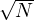

A univariate linear function with input x and output y has the form y = w1x + w0 where w0 and w1 are real-valued coefficients (weights) to be learned. We define w to be the vector ⟨w0,w1⟩ and define the linear function as hw = w1x + w0. The task of finding the hw that best fits the data is called linear regression.
To fit a line to the data, we find the values of the weights that minimizes the empirical loss. We can calculate the empirical loss, using the L2 loss function, as
We obtain w* = argminwLoss(hw) when the empirical loss is minimum and its partial derivatives with respect to w0 and w1 are zero.
These equations have a unique solution
The space defined by all possible settings of the weights is called the weight space. For univariate linear regression the weight space is two-dimensional. The loss function is convex for every linear regression problem with the L2 loss function. There are no local minima.
Gradient descent is a method that lets us minimize loss without solving for the zeroes of the derivatives. It involves computing an estimate of the gradient at a point, and moving downhill along the steepest path until we reach a local minimum.
Gradient descent was discovered by Cauchy, who noticed that for any u = f(x,y,z,…), we could say that:
Where X = fx′, Y = fy′, … are the partial derivatives of the function. We can take α = -θX, β = -θY , … to obtain
If θ is small enough, we get a value Θ = f(x-θX,y -θY,z -θZ,…) which is less than u. We can repeat this until Θ vanishes or coincides with a minimum value.
In the case of linear regression, we can iteratively reach convergence by performing the operation
α is a parameter called the learning rate. It can be a fixed constant or can decay over time. We can substitute the values of the partial derivatives to get
These updates are called the batch gradient descent learning rule for univariate linear regression (also called deterministic gradient descent). A step that covers all the training examples is called an epoch.
A faster variant, called stochastic gradient descent (SGD), randomly selects a small number of training examples at each step. For example, by taking a minibatch size of N∕100, each step becomes 100 times faster. Since the error is proportional to , we need 10 times as many steps. Overall, this method is still 10 times faster than deterministic gradient descent.
Convergence of SGD is not necessarily guaranteed. It can oscillate around the minimum without converging. However, gradual decrement of the learning rate, α, can guarantee convergence. SGD is also useful in an online setting, where new data comes in one at a time, and a model needs to adapt to changes represented in the new data.
We can extend our approach to multivariate linear regression where each example xj is an n-element vector, and out hypotheses are functions of the form
If we invent a dummy attribute xj,0, which is always equal to 1, we can write our hypotheses as dot products
The best vector of weights, w* minimizes squared-error:
It is possible to solve analytically for the w that minimizes loss. If y is the vector of outputs and X be the data matrix, then the vector of predicted outputs is ŷ = Xw, and the squared-error loss over the training data is
We can set the gradient to zero
Rearranging, we find that the minimum-loss weight vector is
(X⊤X)-1X⊤ is called the pseudoinverse of the matrix, and the above equation is called the normal equation.